Les composantes web sont les éléments qui composent un site web ou une application web. Ils sont utilisés pour créer la structure, le contenu, le style et les fonctionnalités d'un site web. Voici quelques-unes des principales composantes web :
- HTML (Hypertext Markup Language) : C'est le langage de balisage standard utilisé pour créer la structure et le contenu d'une page web. Il permet de définir les titres, les paragraphes, les images, les liens, les tableaux et autres éléments de base.
- CSS (Cascading Style Sheets) : C'est un langage de style utilisé pour définir la présentation et l'apparence visuelle d'une page web. Il permet de définir les couleurs, les polices, les marges, les positions, les animations, etc.
- JavaScript : C'est un langage de programmation utilisé pour ajouter des fonctionnalités interactives et dynamiques à un site web. Il permet de créer des menus déroulants, des carrousels, des formulaires interactifs, des animations, etc.
- Images : Les images, telles que les photos, les icônes et les graphiques, sont utilisées pour enrichir le contenu visuel d'un site web.
- Vidéos et audios : Les vidéos et les fichiers audio peuvent être incorporés dans une page web pour fournir du contenu multimédia.
- Liens : Les liens (ou hyperliens) permettent de relier différentes pages web entre elles. Ils sont essentiels pour naviguer à travers un site web.
- Formulaires : Les formulaires permettent aux utilisateurs de soumettre des données et des informations sur un site web, par exemple lors de la création de comptes ou du remplissage de questionnaires.
- Boutons et éléments interactifs : Les boutons et autres éléments interactifs permettent aux utilisateurs d'effectuer des actions spécifiques, comme soumettre un formulaire, ouvrir des menus, etc.
- Contenu multimédia intégré : Les contenus provenant de services tiers, tels que des vidéos YouTube intégrées, des cartes Google Maps, des publications sur les réseaux sociaux, etc.
- Effets spéciaux et animations : Les effets spéciaux et animations CSS ou JavaScript peuvent être utilisés pour rendre le site web plus attrayant et interactif.
Ces composantes web peuvent être combinées et mises en œuvre de différentes manières pour créer des sites web avec une grande variété de fonctionnalités et de styles.
Appel à l’action
L’appel à l’action, ou « Call to Action (CTA) » en anglais, est l’élément visuel (bouton ou texte) qui indique aux visiteurs à cliquer. Il indique à l’utilisateur quoi faire, où cliquer, quoi acheter. Il est censé le guider vers l’objectif du détenteur du site. Vendre des billets, informer, localiser un lieu, etc.
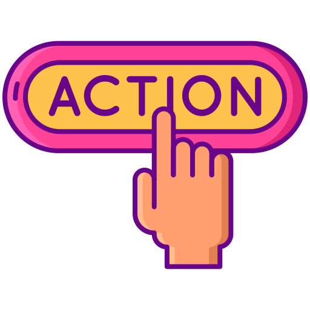
Fonctions
Guider l’utilisateur vers un parcours qu’on définit (par exemple on souhaite que les visiteurs consultent les promotions)
Amener l’utilisateur à la prochaine étape dans un processus plus complexe.
Normes et bonnes pratiques UX
Le bouton « appel à l’action » doit avoir une taille convenable pour attirer l’attention de l’utilisateur, pensez aussi aux appareils tactiles.
La couleur de ce bouton peut être déterminée en fonction de celles de votre logo et de votre site internet. Cependant, il peut être judicieux de le démarquer du reste de la page : si vous utilisez la couleur orange, cherchez à différencier votre appel à l’action afin qu’il ressorte davantage et attire l’attention de l’utilisateur.
Le texte du bouton vise à expliquer à l'utilisateur à quoi il sert.
Utiliser des verbes d’action
Utiliser une terminologie spécifique à une tâche (éviter soumettre ou cliquez ici)
Titre et Paragraphe
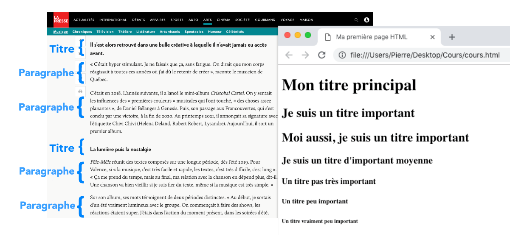
Les titres et paragraphes sont des éléments de base essentiels en HTML pour structurer et organiser le contenu d'une page web. En utilisant correctement les titres et paragraphes, vous pouvez créer une structure logique et claire pour votre contenu web, ce qui améliore l'accessibilité, l'expérience utilisateur et le référencement du site.
Il est important de choisir judicieusement le niveau des titres pour refléter l'organisation du contenu et d'utiliser les paragraphes pour séparer les différents blocs d'informations afin de rendre la lecture plus agréable.
Liens hypertextes
TEXTE et BOUTON
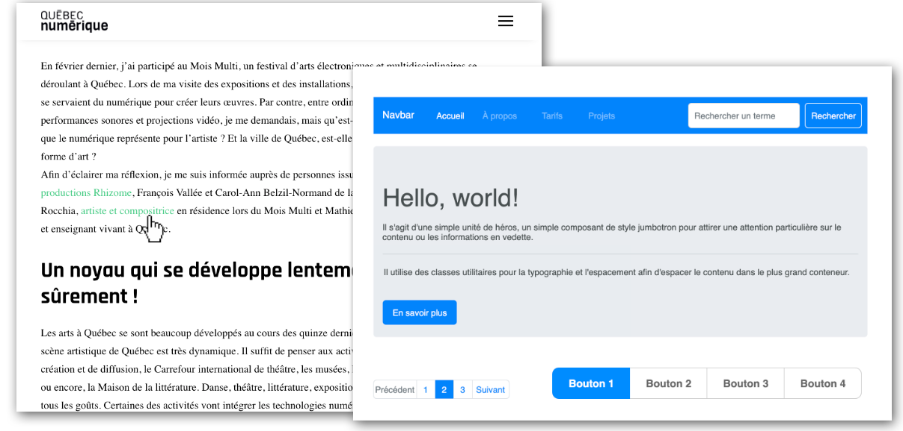
Les liens hypertexte, que ce soit sous forme de texte ou de bouton, sont des éléments clés en HTML qui permettent de créer des hyperliens entre différentes pages web ou ressources sur Internet.
En utilisant des liens hypertexte, que ce soit sous forme de texte ou de bouton, vous pouvez créer une navigation facile et permettre aux utilisateurs d'accéder rapidement à d'autres pages, sites web ou ressources connexes.
Assurez-vous que les liens sont clairs, pertinents et bien formatés pour améliorer l'expérience utilisateur et la navigation sur votre site.
Images
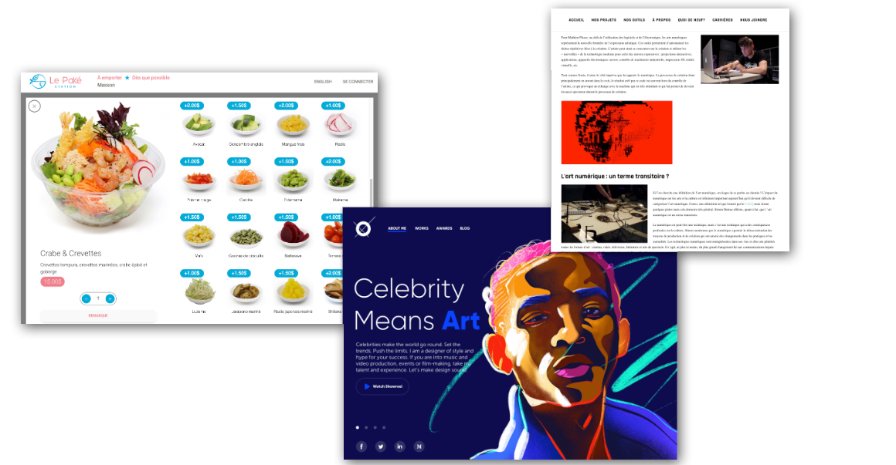
Les images sont des éléments essentiels en web design qui permettent d'ajouter du contenu visuel et de rendre les pages web plus attrayantes et informatives.
Les images sont un élément essentiel pour améliorer l'esthétique et l'expérience utilisateur d'un site web. Cependant, il est important de les optimiser pour réduire leur taille de fichier et assurer des temps de chargement rapides du site.
Utilisez des images appropriées et pertinentes pour illustrer le contenu, et n'oubliez pas d'ajouter des textes alternatifs pour améliorer l'accessibilité de votre site.
Icônes
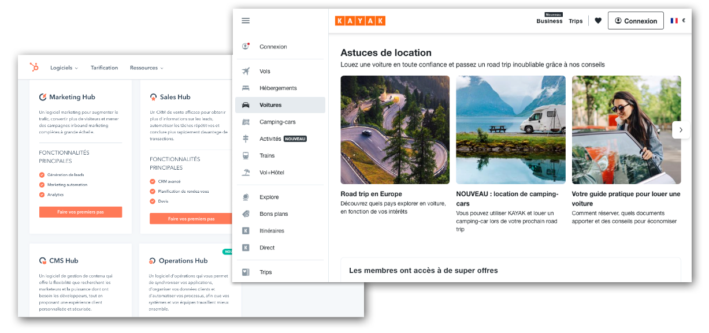
Les icônes web sont de petites images ou symboles utilisés pour représenter des actions, des objets ou des concepts de manière visuelle. Elles jouent un rôle important en web design car elles améliorent l'expérience utilisateur en fournissant des informations et des indications visuelles de manière concise et intuitive.
Rôles des icônes
Les icônes sont utilisées pour diverses raisons sur un site web :
Indiquer des actions : Elles représentent des actions courantes comme le bouton de partage, de téléchargement, de recherche, etc.
Naviguer : Les icônes de menu, de flèches, etc., facilitent la navigation sur le site.
Représenter des objets : Elles symbolisent des objets spécifiques tels que des enveloppes pour les e-mails, des téléphones pour les contacts, etc.
Afficher des états : Elles peuvent indiquer des états spécifiques, comme une coche pour une action réussie ou une croix pour une erreur.
Améliorer l'esthétique : Les icônes ajoutent un élément visuel agréable au design global du site web.
En résumé, les icônes web sont de petits éléments visuels polyvalents qui améliorent l'expérience utilisateur, la navigation et l'esthétique d'un site web. Elles permettent de communiquer des informations rapidement et efficacement, et peuvent être utilisées pour améliorer l'accessibilité et l'interaction globale avec le contenu du site.
Les cartes
LISTE ou GRILLE
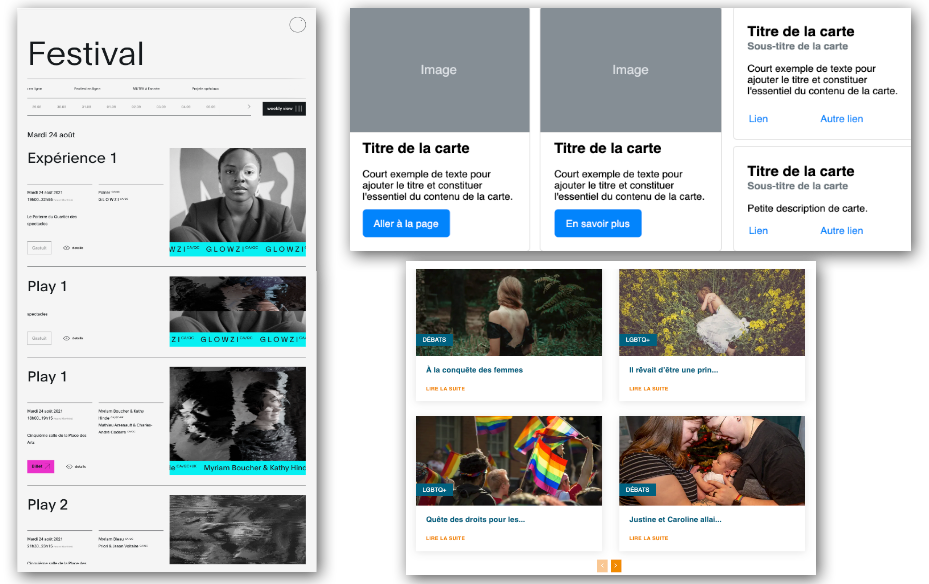
En web design, les cartes sont des éléments visuels qui présentent des informations ou des contenus de manière concise et organisée. Elles sont devenues très populaires ces dernières années en raison de leur efficacité pour présenter divers types de données de manière visuellement attrayante et facile à comprendre.
Structure des cartes
Les cartes sont généralement constituées d'un conteneur rectangulaire qui peut contenir une image, un titre, un texte descriptif et d'autres éléments pertinents. Les cartes sont conçues pour être autonomes et indépendantes les unes des autres, ce qui permet de les afficher de manière modulaire et flexible sur une page web.
Utilisations des cartes
Les cartes sont utilisées pour organiser et présenter des informations de manière visuellement attrayante. Elles sont couramment utilisées pour :
Afficher des produits ou des services avec une image, une description et un bouton d'action pour les achats.
Présenter des articles ou des publications de blog avec des images, des titres et des extraits.
Montrer des informations géographiques avec une carte interactive intégrée.
Afficher des profils utilisateur avec des images, des noms et des informations de contact.
Présenter des aperçus de contenu avec des images et des titres cliquables pour en savoir plus.
Avantages des cartes
Les cartes offrent plusieurs avantages
Présentation modulaire : Elles permettent de structurer l'information en blocs distincts, rendant la disposition flexible et facile à modifier.
Facilité de numérisation : Les cartes sont faciles à parcourir visuellement, ce qui permet aux utilisateurs de trouver rapidement les informations qui les intéressent.
Réactivité : Les cartes s'adaptent bien aux conceptions responsive, ce qui les rend idéales pour les appareils mobiles et les tablettes.
Amélioration de l'esthétique : Les cartes contribuent à rendre le design d'une page plus esthétique et attrayant.
En résumé, les cartes sont un outil puissant en web design pour organiser et présenter des informations de manière visuellement attrayante et conviviale. Elles offrent une approche modulaire et réactive pour afficher une variété de contenus et sont couramment utilisées dans les sites web modernes pour améliorer l'expérience utilisateur.
Les carrousels
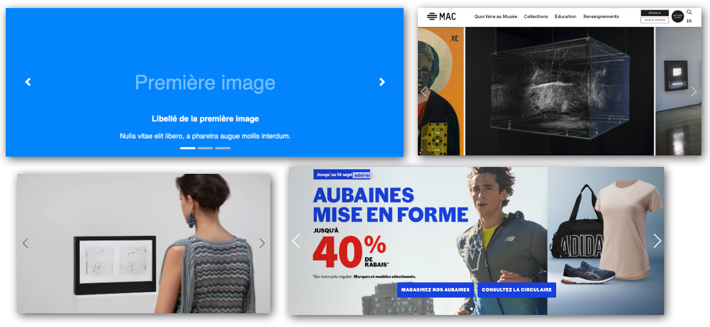
Un carrousel d'images, également connu sous le nom de diaporama d'images, est un composant web interactif qui affiche une série d'images en les faisant défiler automatiquement ou en permettant à l'utilisateur de naviguer manuellement entre les images. Il est souvent utilisé pour mettre en valeur plusieurs images ou produits de manière visuellement attrayante et efficace sur une page web.
Les carrousels d'images sont couramment utilisés sur les sites web pour diverses raisons :
Mettre en évidence le contenu : Ils permettent de mettre en évidence différents produits, projets, images ou messages, en affichant une série d'images de manière séquentielle.
Économiser de l'espace : Ils permettent d'afficher plusieurs images sur un espace limité de la page web en utilisant une rotation automatique ou des boutons de navigation pour parcourir les images.
Attirer l'attention : Les mouvements et les transitions dans le carrousel attirent l'attention des utilisateurs, les incitant à interagir avec le contenu.
Annoncer des offres ou des événements : Les carrousels d'images sont souvent utilisés pour mettre en avant des promotions, des annonces d'événements spéciaux, etc.
Offrir une expérience interactive : Certains carrousels permettent aux utilisateurs de contrôler le défilement des images, leur offrant ainsi une expérience interactive.
Il est important de noter que l'utilisation excessive de carrousels d'images peut affecter la vitesse de chargement de la page et la convivialité, en particulier sur les appareils mobiles. Il est donc essentiel de concevoir et d'implémenter le carrousel de manière réfléchie pour qu'il améliore l'expérience utilisateur sans nuire à la performance globale du site web.
Galerie de photo
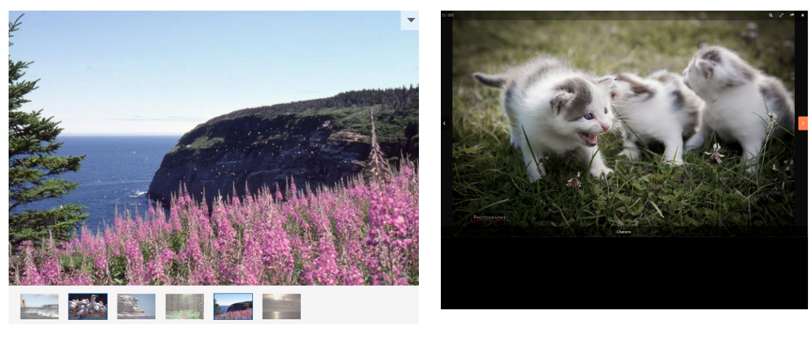
Une galerie de photos web est un élément visuel interactif qui permet de présenter plusieurs images de manière organisée et esthétique sur une page web. Elle est utilisée pour mettre en valeur des images, des photographies ou des créations artistiques, offrant aux visiteurs une expérience visuelle agréable et immersive.
Structure d'une galerie de photos
Une galerie de photos est généralement composée d'une série d'images miniatures ou de vignettes, disposées dans un agencement régulier sur la page. Lorsque l'utilisateur clique sur une miniature, une version agrandie de l'image (parfois avec une légende ou une description) est affichée dans une vue modale ou une fenêtre contextuelle.
Caractéristiques des galeries de photos
Vignettes : Les miniatures des images permettent aux utilisateurs de parcourir rapidement la galerie et de sélectionner celles qui les intéressent.
Navigation : Les galeries de photos peuvent inclure des flèches de navigation ou des boutons pour permettre aux utilisateurs de passer d'une image à l'autre.
Diaporama : Certaines galeries offrent la possibilité de lancer un diaporama automatique qui défile les images à intervalles réguliers.
Légendes et descriptions : Des légendes ou des descriptions peuvent être ajoutées sous chaque image pour fournir des informations contextuelles supplémentaires.
Avantages d'une galerie de photos
Mise en valeur des images : Les galeries de photos mettent en évidence le contenu visuel, permettant aux visiteurs de mieux apprécier les détails et la qualité des images présentées.
Organisation : Elles organisent les images en un format structuré, facilitant la présentation d'un grand nombre de photos sur une seule page.
Expérience utilisateur : Les galeries de photos offrent une expérience interactive et immersive, encourageant l'engagement des utilisateurs.
En résumé, les galeries de photos web sont des outils puissants pour présenter des images de manière esthétique et interactive. Elles sont couramment utilisées dans les portfolios, les sites de photographes, les sites de voyage, les galeries d'art en ligne, et partout où la mise en valeur d'images est essentielle.
Vidéo
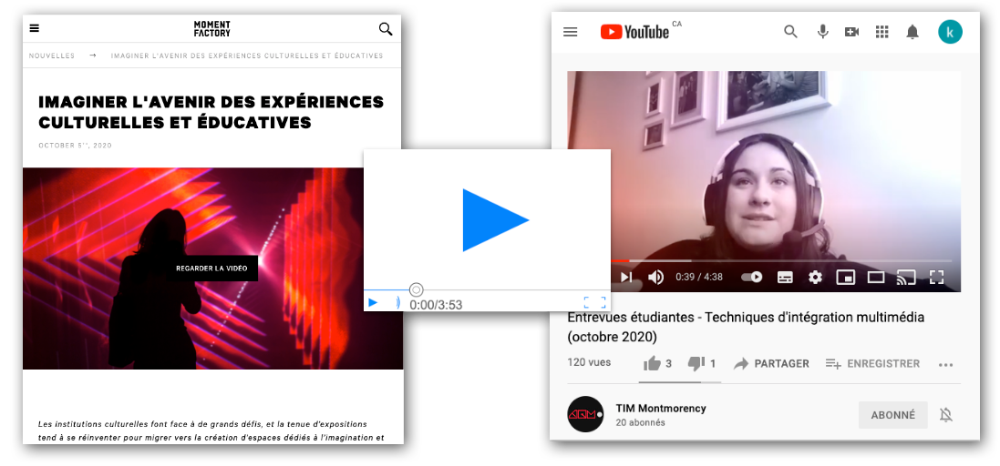
Une visionneuse vidéo web est un composant interactif qui permet aux utilisateurs de lire et de regarder des vidéos directement sur une page web. Elle offre une expérience visuelle immersive en permettant aux visiteurs de visionner du contenu vidéo sans quitter le site.
Avantages d'une visionneuse vidéo
Engagement de l'utilisateur : Les vidéos attirent l'attention et encouragent l'engagement des visiteurs, les incitant à rester plus longtemps sur le site.
Communication visuelle : Les vidéos permettent de transmettre des messages complexes de manière plus efficace que le texte ou les images statiques.
Présentation créative : Les visionneuses vidéo peuvent être conçues pour correspondre au style du site web, offrant ainsi une présentation créative et professionnelle.
Il est essentiel de s'assurer que les vidéos sont optimisées pour le web pour assurer un chargement rapide et une expérience fluide pour les utilisateurs. Les visionneuses vidéo sont fréquemment utilisées dans les sites de streaming, les blogs, les sites de marque, les portfolios, les sites d'e-learning, etc., où la diffusion de contenu vidéo est une composante clé de l'expérience utilisateur.
Audio
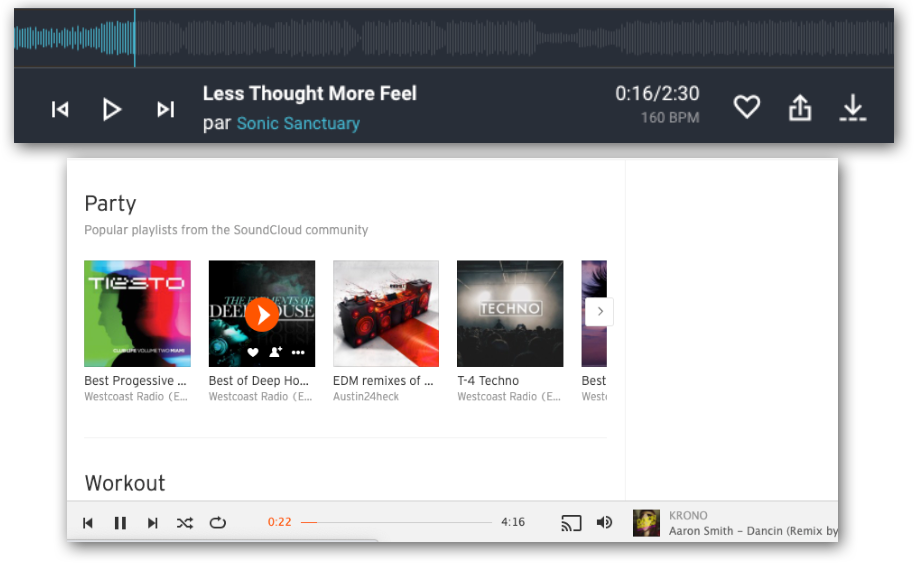
Un lecteur audio web est un composant interactif qui permet aux utilisateurs de lire des fichiers audio directement sur une page web. Il offre une expérience d'écoute fluide et pratique en permettant aux visiteurs de profiter de contenu audio sans avoir à quitter le site.
Avantages d'un lecteur audio
Expérience d'écoute améliorée : Les lecteurs audio offrent aux visiteurs une expérience d'écoute fluide et interactive, ce qui peut augmenter l'engagement sur le site web.
Partage de contenu : Les lecteurs audio permettent de partager facilement des enregistrements audio, tels que des podcasts, de la musique ou des extraits sonores.
Accessibilité : Les lecteurs audio peuvent être utilisés pour rendre le contenu audio accessible aux personnes ayant des problèmes de vision.
Il est important de veiller à ce que les fichiers audio soient optimisés pour le web afin de garantir un chargement rapide et une expérience de lecture sans accroc pour les utilisateurs. Les lecteurs audio sont couramment utilisés dans les sites de musique, les podcasts, les blogs, les cours en ligne et d'autres types de contenu qui bénéficient de l'ajout de contenu audio interactif.
Popup
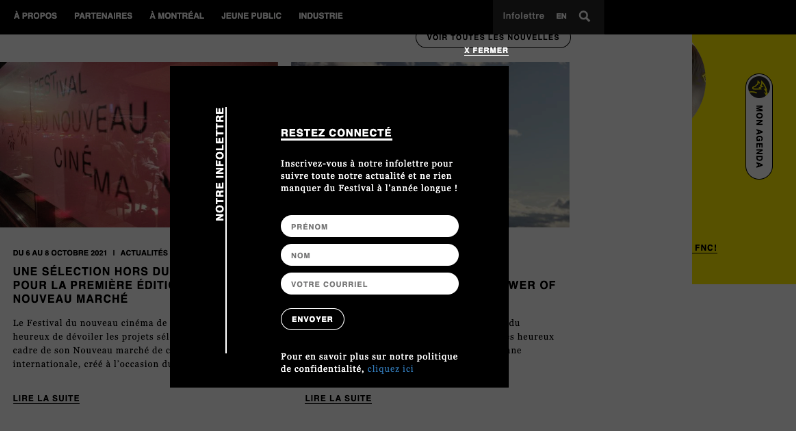
Une fenêtre contextuelle (ou popup en anglais) est une petite fenêtre qui s'affiche au-dessus du contenu principal d'une page web. Elle est souvent utilisée pour afficher des informations supplémentaires, des messages, des publicités, des formulaires d'inscription, ou d'autres contenus d'intérêt pour les utilisateurs.
Types de popups
Popups d'information : Ils fournissent des informations supplémentaires ou des détails contextuels sur un élément sans quitter la page actuelle.
Popups de publicité : Ils affichent des annonces, des offres spéciales ou des promotions pour attirer l'attention des visiteurs.
Popups de formulaire : Ils permettent aux utilisateurs de remplir un formulaire pour s'abonner à une newsletter, s'inscrire à un service, etc.
Popups de confirmation : Ils sont utilisés pour demander la confirmation de certaines actions, comme la suppression d'un élément ou la sortie du site.
Bonnes pratiques pour les popups
Éviter l'abus : Trop de popups peuvent perturber l'expérience utilisateur et agacer les visiteurs. Il est préférable de limiter leur utilisation à des moments pertinents et importants.
Faciliter la fermeture : Assurez-vous que les popups sont faciles à fermer pour que les utilisateurs puissent revenir rapidement au contenu principal.
Conception adaptée aux mobiles : Les popups doivent être conçus de manière réactive pour s'adapter à différents appareils et tailles d'écran.
En résumé, les popups sont un outil utile pour afficher des informations importantes ou capturer l'attention des visiteurs, mais leur utilisation doit être réfléchie et respectueuse de l'expérience utilisateur pour éviter tout effet négatif sur le site web.
Fenêtre Modale
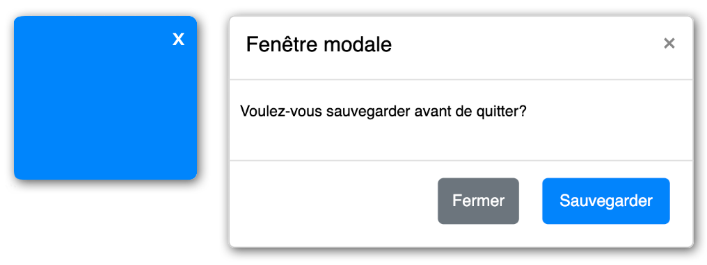
Une fenêtre modale (ou modal en anglais) est une superposition contextuelle qui s'affiche au-dessus du contenu principal d'une page web pour mettre en évidence des informations importantes ou demander une interaction spécifique de l'utilisateur.
Contrairement aux popups traditionnels, les fenêtres modales bloquent généralement le reste du contenu de la page, obligeant l'utilisateur à interagir avec la fenêtre modale avant de pouvoir continuer à utiliser le site.
Utilisations des fenêtres modales
Les fenêtres modales peuvent être utilisées pour différentes raisons, notamment:
Afficher des informations importantes : Elles permettent de mettre en évidence des messages importants, des avertissements ou des confirmations pour une action spécifique.
Collecter des données : Elles peuvent être utilisées pour afficher des formulaires d'inscription, des sondages ou des questionnaires.
Afficher des médias : Elles peuvent servir à afficher des images agrandies, des galeries d'images ou des vidéos.
Demander une interaction spécifique : Elles peuvent être utilisées pour demander à l'utilisateur de prendre une décision, de confirmer une action ou d'effectuer une tâche spécifique.
Conception et bonnes pratiques
Conception adaptée aux mobiles : Les fenêtres modales doivent être conçues de manière réactive pour une expérience utilisateur cohérente sur différents appareils.
Faciliter la fermeture : Assurez-vous que les utilisateurs peuvent facilement fermer la fenêtre modale en ajoutant un bouton de fermeture clair et accessible.
Fréquence d'apparition : Évitez d'utiliser trop fréquemment les fenêtres modales pour ne pas perturber l'expérience de navigation des utilisateurs.
En résumé, les fenêtres modales sont des superpositions contextuelles utiles pour attirer l'attention des utilisateurs sur des informations importantes ou pour demander une interaction spécifique. Elles sont couramment utilisées pour améliorer l'expérience utilisateur et faciliter les interactions sur les sites web. Cependant, leur utilisation doit être réfléchie et respectueuse de l'expérience de l'utilisateur pour éviter tout effet négatif sur le site web.
Accordéon
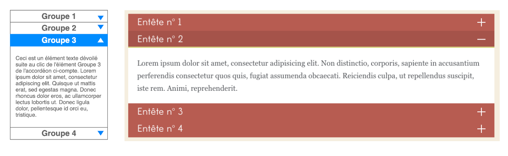
Un accordéon web est un composant interactif qui permet d'organiser et de présenter du contenu de manière extensible et hiérarchique sur une page web. Il est souvent utilisé pour afficher des informations de manière concise et faciliter la navigation sur des sites web contenant beaucoup de contenu.
Utilisations des accordéons
Les accordéons sont souvent utilisés pour :
Organiser du contenu : Ils permettent de présenter du contenu organisé en sections, ce qui améliore la lisibilité et facilite l'accès à l'information.
Réduire l'encombrement : Ils permettent de réduire l'encombrement sur une page en masquant le contenu supplémentaire par défaut et en le rendant accessible sur demande.
Afficher des FAQ : Les accordéons sont couramment utilisés pour afficher des sections FAQ (Foire Aux Questions), où les questions sont les en-têtes et les réponses sont masquées jusqu'à ce que l'utilisateur les sélectionne.
Avantages des accordéons
Gain d'espace : Les accordéons permettent d'économiser de l'espace sur la page en cachant le contenu jusqu'à ce qu'il soit nécessaire.
Navigation conviviale : Ils facilitent la navigation en présentant de manière organisée des sections de contenu qui peuvent être rapidement consultées.
Amélioration de l'expérience utilisateur : Les accordéons offrent une expérience interactive et engageante aux utilisateurs en leur permettant de contrôler l'affichage du contenu.
Cependant, il est important de ne pas surcharger les accordéons avec trop de contenu caché, car cela pourrait nuire à l'expérience utilisateur en rendant difficile la recherche d'informations spécifiques.
Les accordéons sont couramment utilisés dans les sites web de services, les FAQ, les descriptions de produits, et partout où une organisation hiérarchique du contenu est bénéfique pour l'expérience utilisateur.
Onglets
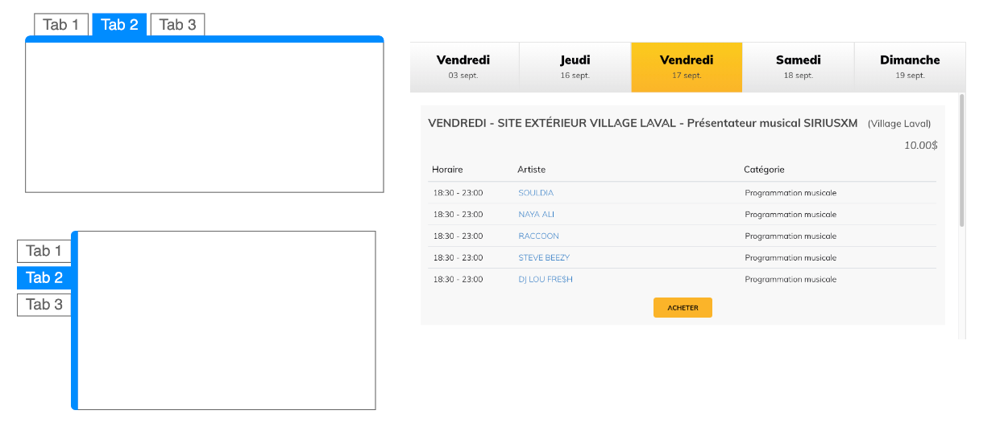
Les onglets web, également appelés onglets de navigation ou onglets de contenu, sont un élément interactif qui permet de présenter différentes sections ou catégories de contenu sur une page web.
Ils sont souvent utilisés pour organiser et afficher des informations de manière concise, tout en offrant une expérience de navigation intuitive aux utilisateurs.
Utilisations des onglets
Les onglets sont souvent utilisés pour :
Organiser du contenu : Ils permettent de présenter du contenu structuré en catégories, ce qui facilite la navigation et la recherche d'informations spécifiques.
Afficher différentes vues : Ils peuvent être utilisés pour afficher différentes vues d'une même page, comme les caractéristiques d'un produit, les avis des clients et les spécifications techniques.
Réduire l'encombrement : Les onglets aident à réduire l'encombrement sur une page en présentant les informations de manière compacte et organisée.
Avantages des onglets
Facilité de navigation : Les onglets offrent une navigation intuitive en permettant aux utilisateurs de passer facilement d'une section à l'autre sans devoir parcourir toute la page.
Hiérarchisation du contenu : Ils aident à structurer le contenu de manière claire et logique, ce qui améliore l'expérience utilisateur.
Gain d'espace : Les onglets permettent d'économiser de l'espace sur la page en présentant plusieurs sections de contenu dans un espace limité.
Cependant, il est important de ne pas surcharger les onglets avec trop de sections, car cela pourrait rendre la navigation confuse pour les utilisateurs.
Les onglets sont couramment utilisés dans les sites web de produits, les pages d'accueil, les descriptions de services, et partout où une organisation claire du contenu est essentielle pour une expérience utilisateur optimale
Filtres de contenu
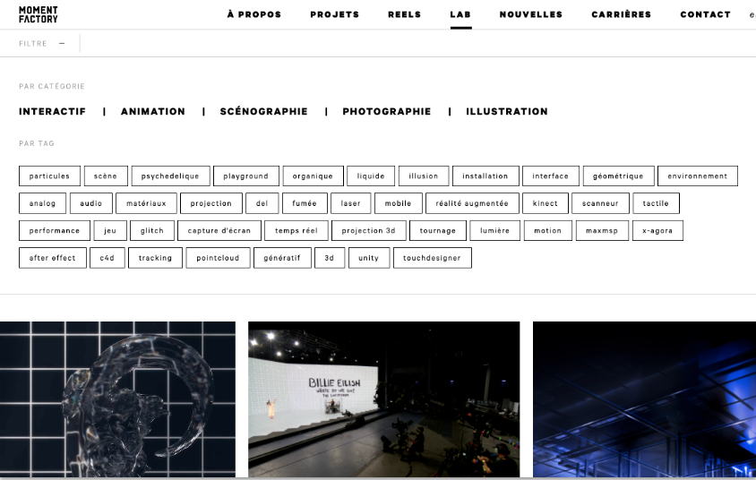
Les filtres de contenu web sont des outils interactifs qui permettent aux utilisateurs de trier et de filtrer le contenu affiché sur une page en fonction de leurs préférences ou de critères spécifiques.
Ils sont couramment utilisés pour faciliter la recherche d'informations, la navigation et la personnalisation de l'expérience utilisateur.
Utilisations des filtres de contenu
Les filtres de contenu sont couramment utilisés pour :
Trier les produits : Sur les sites de commerce électronique, les utilisateurs peuvent filtrer les produits par prix, marque, taille, couleur, etc.
Filtrer les résultats de recherche : Sur les moteurs de recherche ou les sites de contenu, les utilisateurs peuvent affiner les résultats en fonction de leurs préférences.
Personnaliser les affichages : Sur les tableaux de bord ou les applications, les filtres permettent aux utilisateurs de personnaliser les informations affichées selon leurs besoins.
Avantages des filtres de contenu
Navigation simplifiée : Les filtres de contenu facilitent la navigation en permettant aux utilisateurs de trouver rapidement ce qu'ils recherchent sans parcourir tout le contenu.
Personnalisation : Ils permettent aux utilisateurs de personnaliser leur expérience en affichant uniquement le contenu qui les intéresse.
Amélioration de l'engagement : Les filtres de contenu offrent aux utilisateurs un contrôle sur ce qu'ils voient, ce qui peut augmenter leur engagement sur le site.
Cependant, il est essentiel de concevoir des filtres de contenu clairs, faciles à utiliser et pertinents pour le contenu du site. Trop de filtres ou des options de filtrage complexes peuvent rendre l'expérience utilisateur confuse et frustrante.
Les filtres de contenu sont couramment utilisés dans les sites web de commerce électronique, les blogs, les bibliothèques de contenu, et partout où la sélection et la personnalisation du contenu sont importantes pour les utilisateurs.
Infobulle
Tooltip
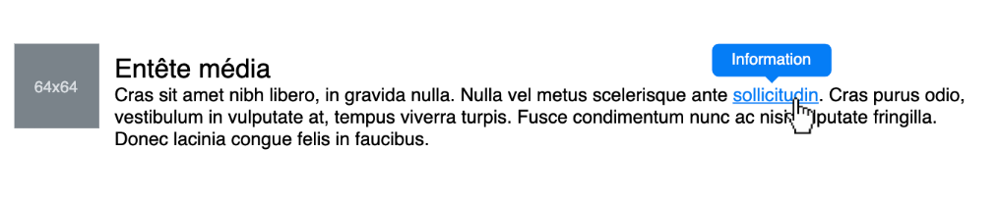
Une infobulle web, également connue sous le nom de "tooltip" en anglais, est une petite fenêtre contextuelle qui s'affiche lorsque l'utilisateur survole un élément interactif, tel qu'un lien, une icône ou un bouton, avec le curseur de la souris.
Elle fournit généralement des informations supplémentaires, des descriptions ou des explications sur l'élément survolé, offrant ainsi une expérience utilisateur enrichie et une meilleure compréhension du contenu.
Utilisations des infobulles
Les infobulles sont couramment utilisées pour :
Fournir des descriptions : Elles peuvent donner des informations supplémentaires sur un lien, un bouton ou une icône sans avoir besoin de cliquer sur l'élément.
Expliquer des acronymes : Les infobulles sont utiles pour afficher la signification complète d'un acronyme lorsque l'utilisateur survole le terme.
Donner des indications : Elles peuvent être utilisées pour guider l'utilisateur sur la fonctionnalité d'un élément interactif.
Avantages des infobulles
Amélioration de l'expérience utilisateur : Les infobulles offrent une expérience utilisateur améliorée en fournissant des informations supplémentaires de manière contextuelle.
Gain d'espace : Elles permettent de fournir des détails supplémentaires sans surcharger la conception de la page web.
Accessibilité : Les infobulles peuvent être bénéfiques pour les personnes malvoyantes, car elles fournissent des descriptions visuelles supplémentaires.
Il est important de concevoir des infobulles de manière concise et claire, afin de ne pas surcharger l'utilisateur avec trop d'informations.
Les infobulles sont largement utilisées dans les interfaces utilisateur, les formulaires en ligne, les tableaux de données, et partout où des informations contextuelles peuvent améliorer la compréhension et l'interaction avec le contenu du site.
Formulaire Web
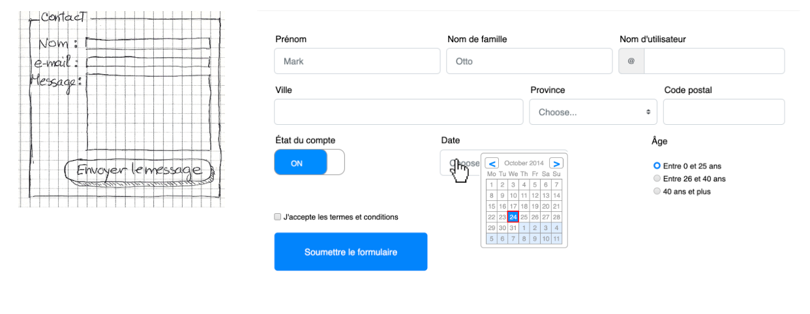
Un formulaire web est un élément interactif utilisé pour collecter des informations auprès des utilisateurs sur une page web. Il permet aux visiteurs de soumettre des données, de saisir des informations et de communiquer avec le site web ou l'application.
Les formulaires sont essentiels pour diverses interactions en ligne, tels que l'inscription, les commentaires, les enquêtes, les achats en ligne, etc.
Types de formulaires
Il existe différents types de formulaires, notamment :
Formulaires d'inscription : Utilisés pour collecter des informations d'identification et créer un compte utilisateur.
Formulaires de contact : Permettent aux visiteurs de contacter le propriétaire du site web par e-mail.
Formulaires de recherche : Utilisés pour rechercher des informations spécifiques sur le site.
Formulaires de paiement : Pour effectuer des transactions financières en ligne.
Formulaires d'inscription à des événements : Pour s'inscrire à des webinaires, des cours, des ateliers, etc.
Conception des formulaires
Disposition claire : Organiser les champs et les étiquettes de manière logique pour faciliter la compréhension.
Étiquettes explicites : Utiliser des étiquettes claires et des messages d'erreur compréhensibles.
Validation des données : Vérifier les entrées pour s'assurer qu'elles sont correctes et pertinentes.
Boutons d'action : Utiliser des libellés explicites pour les boutons de soumission et d'annulation.
Les formulaires sont omniprésents sur le web et sont essentiels pour recueillir des informations auprès des utilisateurs. Une conception soignée et une fonctionnalité intuitive des formulaires sont cruciales pour améliorer l'engagement des utilisateurs et assurer la précision des données collectées.
Alerte, Erreur ou Notification
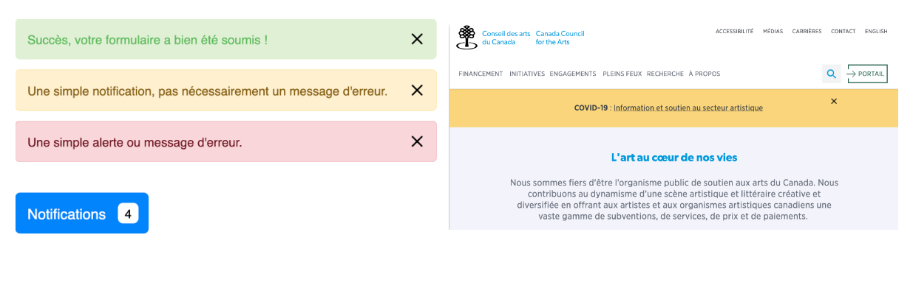
Les messages d'alerte, d'erreur ou de notification en web design sont des éléments visuels ou textuels qui informent les utilisateurs sur des événements, des erreurs ou des actions importantes sur une page web.
Ils sont utilisés pour communiquer des informations essentielles aux utilisateurs et les guider dans leur interaction avec le site ou l'application.
Messages d'alerte : Les messages d'alerte sont utilisés pour avertir les utilisateurs d'une situation importante ou urgente qui nécessite leur attention. Ils peuvent être utilisés pour informer les utilisateurs sur des problèmes temporaires du site, des mises à jour importantes ou des changements qui peuvent affecter leur expérience.
Messages d'erreur : Les messages d'erreur sont affichés lorsque l'utilisateur a effectué une action incorrecte ou a fourni des informations incorrectes dans un formulaire. Ces messages informent les utilisateurs sur les erreurs spécifiques qu'ils ont commises et fournissent des instructions pour les corriger.
Messages de notification : Les messages de notification sont utilisés pour informer les utilisateurs sur des événements ou des actions qui ont été réalisés avec succès. Ils peuvent être utilisés pour confirmer qu'une opération a été effectuée, comme l'envoi d'un formulaire, la confirmation d'un paiement, ou la réussite d'une action.
Conception et bonnes pratiques
Clarté : Les messages d'alerte, d'erreur ou de notification doivent être clairs et concis pour éviter toute confusion chez les utilisateurs.
Couleurs : Utiliser des couleurs distinctives, comme le rouge pour les erreurs, le jaune pour les alertes, et le vert pour les notifications, pour différencier visuellement ces types de messages.
Placement : Les messages doivent être placés de manière à attirer l'attention des utilisateurs sans perturber leur expérience de navigation.
Ces types de messages sont cruciaux pour améliorer la communication avec les utilisateurs, renforcer la confiance dans l'interface et guider les utilisateurs dans leur interaction avec le site web. Une conception réfléchie et claire des messages d'alerte, d'erreur ou de notification contribue à une expérience utilisateur positive et efficace.